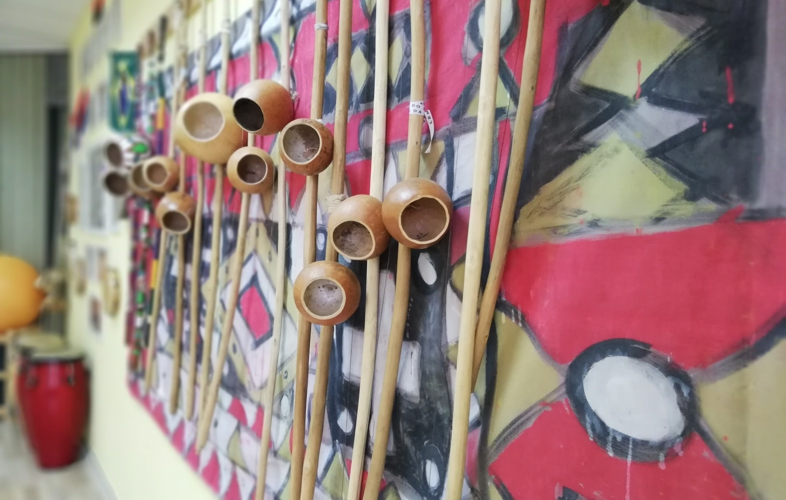

capoeira angola
Capoeira Angola Center Belgrade
Termini
ODRASLI – 3 puta nedeljno u trajanju od 2 sata:
Ponedeljak, sreda i petak 19.00–21.00
DECA UZRAST OD 5 DO 7 GODINA – 2 puta nedeljno u trajanju od sat vremena:
Utorak od 18.00
Subota 12.00
DECA UZRAST OD 8 DO 11 GODINA – 2 puta nedeljno u trajanju od sat vremena:
Utorak 19.00
Subota 11.00
Svakog meseca priređujemo jednu otvorenu Hodu (događaj za praktikovanje kapuere) za sve uzraste na kojoj su dobrodošli i gosti iz drugih škola. Povremeno organizujemo i radionice na nacionalnom ili internacionalnom nivou sa priznatim učiteljima veštine. Do sada smo bili domaćini više od 35 događaja, od manjih internih radionica do velikih međunarodnih seminara.
Sadržaj časova

Časovi obuhvataju različite oblasti edukacije:
FIZIČKE VEŽBE – vežbe opšte telesne pripreme, trening za izvođenje pokreta, vežbanje pokreta, vežbe istezanja, edukacija o ispravnom i zdravom načinu dugoročnog bavljenja fizičkim aktivnostima.
MUZIČKE VEŽBE – učenje sviranja instrumenata kapuere, zajedničko sviranje muzike kapuere, vežbe za glas, upoznavanje sa neophodnom muzičkom teorijom, učenje pesama kapuere.
KULTURA KROZ MUZIKU I PLES – istraživanje kulturne pozadine kapuere, učenje osnovnih koraka tradicionalnog oblika sambe i plesa makulele, kao i proučavanje afro-brazilskih ritmova na bubnjevima, dairama, zvonima i zvečkama.
Svi časovi se održavaju u našem prostoru koji je posebno namenjen kapueri.
Adresa: Takovska 45, 2. sprat
Spremni ste za prvi korak? Pozovite nas ili nam pošaljite poruku i prijavite se za probni čas. Krenite na put istraživanja pokreta, muzike i kulture.